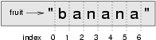
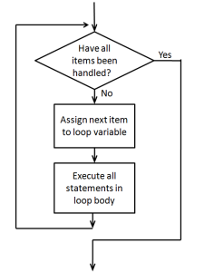

It is time to take a closer look at some of the data types we have been using this semester. Strings, tuples, and lists are all subclasses of a type called a sequence. A sequence has two properties:
We are most familiar with strings. A string is a sequence of characters. In this case, the characters are the elements of the sequence. We know that the order matters since reordering a string makes it a fundamentally different string.
We have seen tuples used to pass data to pygame functions. Tuples are a sequence of values. They can have anything for elements, even other tuples.
Lists are an important data type that we have not used yet. Lists and tuples are very similar with two exceptions. List are created using [ ] while tuples are usually created with ( ). Lists are mutable, while tuples are not. This means that a list can be changed over time, while a tuple cannot.
In the rest of this chapter we will focus on the things that can be done with any sequence. If you see an example done with a string, rest assured that it will work with lists and tuples as well.
| Sequence Type | Holds | Created with | Mutable |
|---|---|---|---|
| String | characters | ' ' or " " | No |
| Tuple | anything | usually ( ) | No |
| List | anything | [ ] | Yes |
>>> sVar = "string of chars"
>>> tVar = (1,2,'a','b', (5,6))
>>> tVar2 = 1,2,'a','b', (5,6)
>>> lVar = [1,2,'a','b', (5,6)]
Indexing is the act of selecting a single element from a sequence. Python uses square brackets for the indexing operator which surround the position of the element you want to return. Notice in the following example that the indexing operator occurs at the end of the sequence variable or value.
>>> fruit = "banana" >>> m = fruit[1] >>> print(m)
The expression fruit[1] selects character position 1 from fruit, and creates a new string containing just this one character. The variable m refers to the result. When we display m, we could get a surprise:
a
Computer scientists always start counting from zero! The letter at subscript position zero of "banana" is b. So at position [1] we have the letter a.
If you want the zero-th letter of a string, you just put 0, or any expression with the value 0, in the brackets:
>>> m = fruit[0] >>> print(m) b
The expression in brackets is called an index. An index specifies a member of an ordered collection, in this case the collection of characters in the string. The index indicates which one you want, hence the name. It can be any integer expression.
Note that indexing a string always returns a string. Indexing a tuple or list will return whatever element was present at that position.
The same indexing notation works to extract elements from a list or tuple. Note that tuples still use [ ] to do indexing.
>>> prime_nums = [2, 3, 5, 7, 11, 13, 17, 19, 23, 29, 31] >>> prime_nums[4] 11 >>> friends = ("Joe", "Amy", "Brad", "Angelina", "Zuki", "Thandi", "Paris") >>> friends[3] 'Angelina'
In addition, we can use negative indices, which count backward from the end of the string. The expression fruit[-1] yields the last letter, fruit[-2] yields the second to last, and so on.
A subsequence of a sequence is obtained by taking a slice. Note that a slice always produces a sequence of the same type that it was taken from. String slices produce strings, list slices produce lists.
>>> s = "Peter, Paul, and Mary" >>> print(s[0:5]) Peter >>> print(s[7:11]) Paul >>> print(s[17:21]) Mary >>> friends = ("Joe", "Amy", "Brad", "Angelina", "Zuki", "Thandi", "Paris") >>> print(friends[2:4]) ('Brad', 'Angelina')
The operator [n:m] returns the part of the string from the n’th character to the m’th character, including the first but excluding the last. This behavior makes sense if you imagine the indices pointing between the characters, as in the following diagram:

Now if you imagine this as a piece of paper, the slice operator [n:m] cuts the paper at the n and m positions.
Two tricks are added to this: if you omit the first index (before the colon), the slice starts at the beginning of the string (or list). If you omit the second index, the slice extends to the end of the string (or list). Thus:
>>> fruit = "banana" >>> fruit[:3] 'ban' >>> fruit[3:] 'ana'
What do you think s[:] means? What about friends[4:]?
The + operator concatenates sequences. Note that both operands must be of the same type:
>>> a = [1, 2, 3] >>> b = [4, 5, 6] >>> c = a + b >>> c [1, 2, 3, 4, 5, 6]
Similarly, the * operator repeats a sequence a given number of times:
>>> [0] * 4 [0, 0, 0, 0] >>> [1, 2, 3] * 3 [1, 2, 3, 1, 2, 3, 1, 2, 3] >> "ah"*5 'ahahahahahah"
The first example repeats [0] four times. The second example repeats the list [1, 2, 3] three times. The last example repeats the word “ah” 5 times.
The len function returns the number of elements in a sequence. Note for a string that is simply the number of characters in the string:
>>> fruit = "banana" >>> len(fruit) 6
To get the last letter of a string, you might be tempted to try something like this:
That won’t work. It causes the runtime error IndexError: string index out of range. The reason is that there is no letter at index position 6 in "banana". Since we started counting at zero, the six indexes are numbered 0 to 5. To get the last character, we have to subtract 1 from length:
Alternatively, we can use negative indices, which count backward from the end of the string. The expression fruit[-1] yields the last letter, fruit[-2] yields the second to last, and so on.
We will wrap up this chapter by discussing a new control structure that is powered by sequences. Python’s for loop provides an convenient form of repetition.
This loop will repeat the body of the statement (line 2) once for each element in the sequence, spidertime. Because of this, we will say this is a for each loop. The loop body is executed for each element of the sequence. The loop variable, c is assigned to each element of "spidertime". This provides 10 repetitions of line 2, each time printing the next letter of the loop.
s p i d e r t i m e
Let’s say we have some friends, and we’d like to send them each an email inviting them to our party. We’ll we don’t quite know how to send email yet, so for the moment we’ll just print a message for each friend:
When we run this, the output looks like this:
Hi Joe. Please come to my party on Saturday! Hi Amy. Please come to my party on Saturday! Hi Brad. Please come to my party on Saturday! Hi Angelina. Please come to my party on Saturday! Hi Zuki. Please come to my party on Saturday! Hi Thandi. Please come to my party on Saturday! Hi Paris. Please come to my party on Saturday!
As a program executes, the interpreter always keeps track of which statement is about to be executed. We call this the control flow, of the flow of execution of the program. When humans execute programs, they often use their finger to point to each statement in turn. So you could think of control flow as “Python’s moving finger”.
Control flow until now has been strictly top to bottom, one statement at a time. The for loop changes this.
Flowchart of a for loop
Control flow is often easy to visualize and understand if we draw a flowchart. This shows the exact steps and logic of how the for statement executes.
Listen to yourself
As you work on your algorithms for how to solve particular problems, “listen” to what you are saying. If you hear words to this effect
- for each
- for every
- for all of them
You will need to use a for each loop to solve the problem. This is a very common thing to do in computer science and you will find for loops to be your move common loop type since it is easy to use and can solve a wide range of problems.